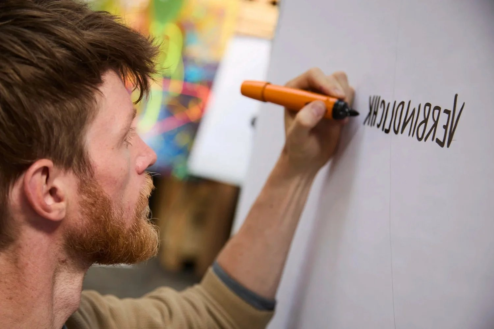
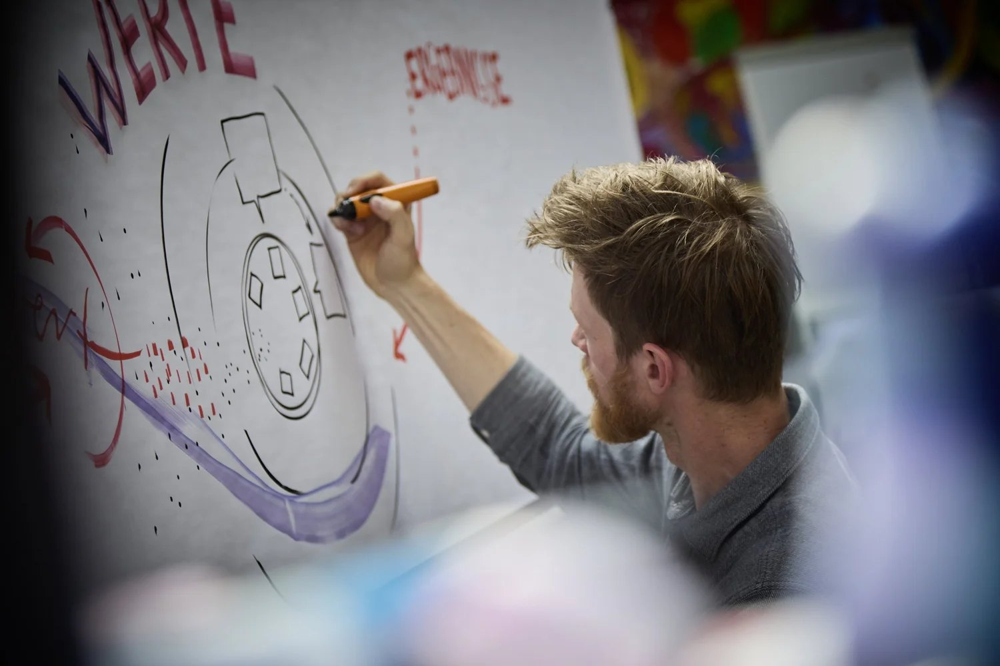
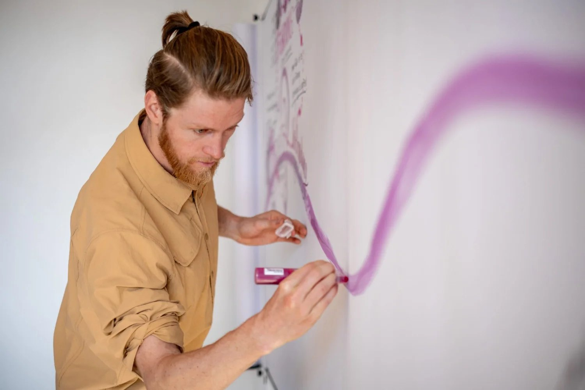
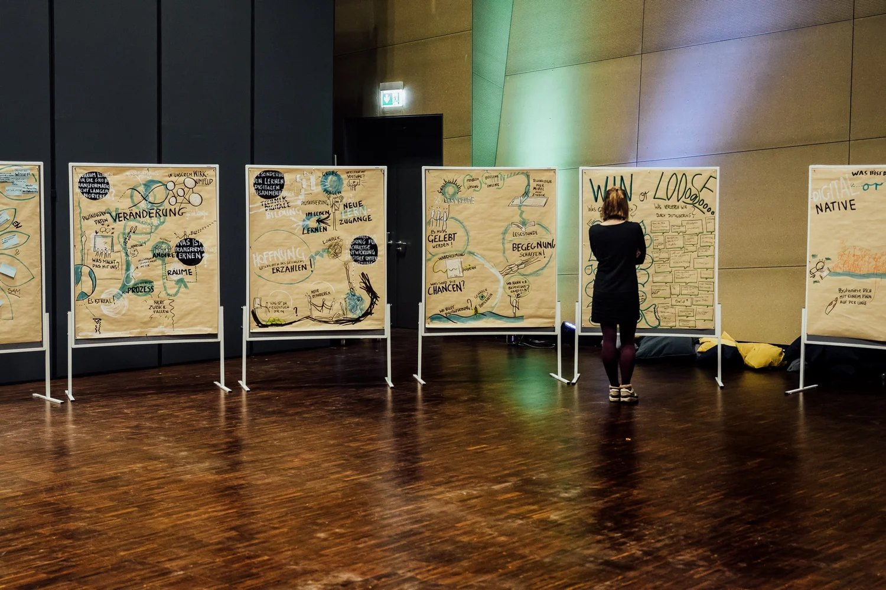
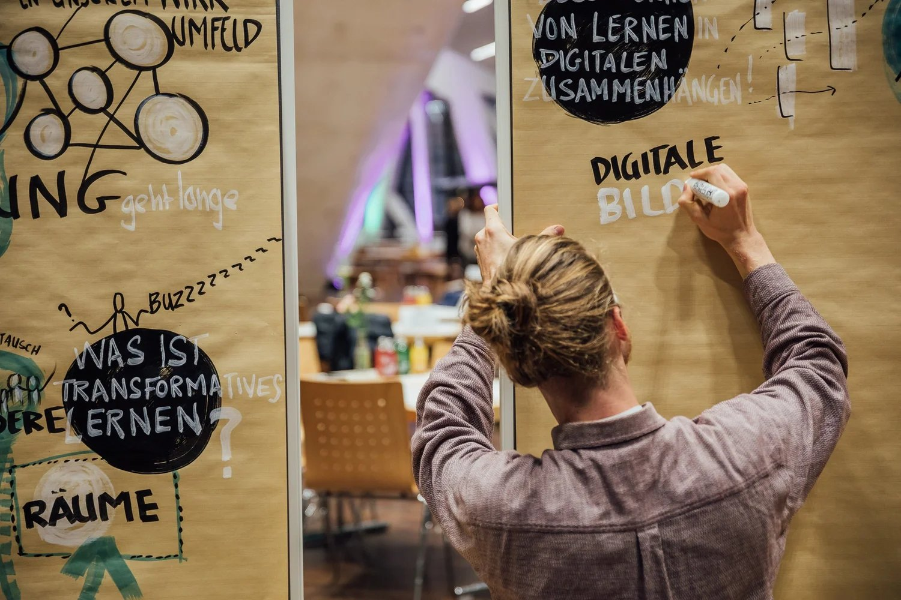
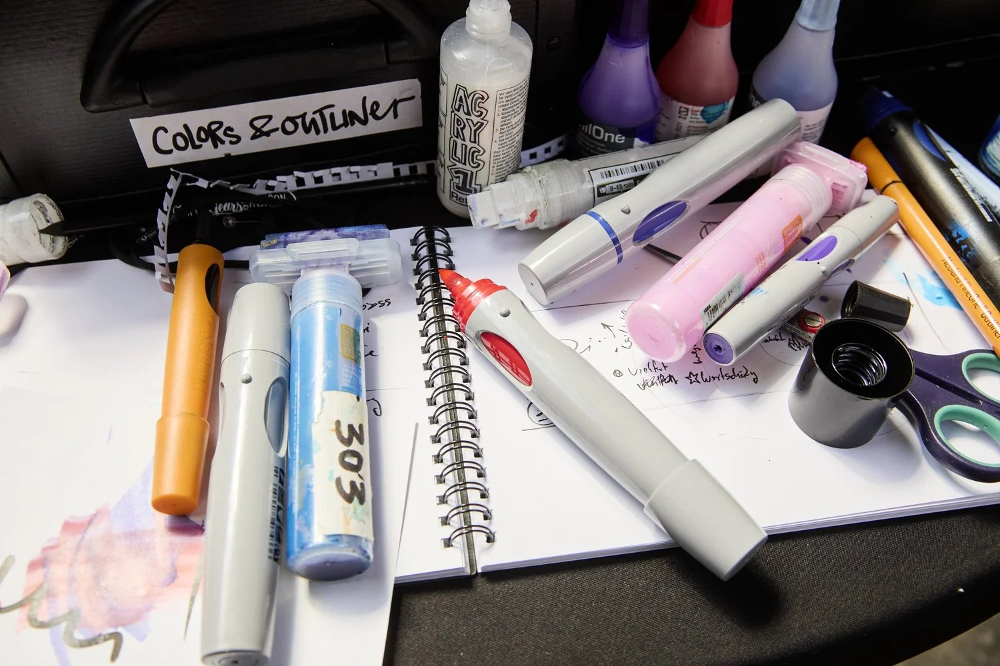

Eure Gedanken werden zu lebendigen Landkarten
Generative Scribing und Graphic Recording machen das Unsichtbare sichtbar – und unvergesslich. Live-Visualisierung für Konferenzen, Workshops und Teamtage in Freiburg und Süddeutschland.

Ich male, was zwischen euch entsteht
Während ihr sprecht, entsteht an der Wand ein Bild. Nicht irgendein Bild – euer Bild.
Die abstrakte Strategie wird zur greifbaren Landkarte. Der Konflikt zeigt sich als kreatives Spannungsfeld. Die Vision nimmt Gestalt an – emotional spürbar, visuell verankert.
Sechs Monate später hängt dieses Bild noch im Büro. Und jeder, der es sieht, erinnert sich.
So entstehen lebendige Bilder
Ich bin von Anfang an dabei
Nicht als stiller Beobachter, sondern als Teil des Prozesses. Ich spüre die Energie, die Spannungen, die Wendepunkte.
Während ihr sprecht, übersetze ich
Abstrakte Gedanken werden zu greifbaren Metaphern. Komplexe Zusammenhänge zu klaren Strukturen. Die Gruppendynamik zum Bildaufbau.
Das Bild wächst mit euch
Menschen stoppen mitten im Meeting: „Genau DAS ist es!“ Das Visuelle wird zum Katalysator für tiefere Einsichten.
Die Essenz bleibt
Nach dem Workshop bekommt ihr hochauflösende Aufnahmen. Die Bilder werden zu Ankerpunkten eurer gemeinsamen Reise.
Graphic Recordings aus Konferenzen und Workshops






Soziale Kunst im Moment.
Visualisierung ist wie Magie – sie bringt das Nicht-Physische in die Materie. Wenn ich live zeichne, wird in Echtzeit sichtbar, was vorher nur gefühlt oder gedacht wurde. Dieser Prozess ist eine Mischung aus tiefer Präsenz und dem Dolmetschen von Wort und Energie in klare, berührende Visualisierungen.
Es geht um Tiefe, nicht um Brainstorming-Design. Es ist soziale Kunst. Ich nehme das, was im Feld liegt, verdaue es, transformiere es – und gebe es in neuer Form zurück. Dabei frage ich mich immer wieder: Wie können wir Formate entwickeln, in denen die Ernte mehrstimmig wird und die Perspektiven aller Beteiligten einfließen?
Was Auftraggebende sagen
„Bei unserer Tagung zur Ko-Produktion von Wissen in der Stadtentwicklung begleitete Jakob die Diskussionen mit Graphic Recording. Jakob beherrscht die hohe Kunst des aktiven Zuhörens und kondensiert Diskussionsstränge auf beeindruckende Weise. Er versteht im richtigen Moment, die richtige Frage zu stellen. Diese Klarheit war eine große Bereicherung – ebenso für unsere weiteren Projekte.“
Prof. Dr. Astrid LeyUniversität Stuttgart„Im Führungskolleg hat Jakob die mehrmonatige Lernreise aller Teilnehmenden in kraftvolle Bilder und Worte gefasst. Er hat die Landschaft der Herausforderungen und Lösungen wunderbar strukturiert und veranschaulicht. Das war für alle enorm hilfreich in diesem innovativen Bildungsprojekt für junge Führungskräfte. Wir sind Jakob total dankbar für seine kreativen und charismatischen Impulse!“
Dr. Philippe MerzGründer & Geschäftsführer, Thales-Akademie„Jakob Kohlbrenner begleitete 2024 und 2025 die Landesjugendkonferenzen des Kultusministeriums mit präzisem Graphic Recording. Dadurch wurden die Ideen unmittelbar sichtbar, klar strukturiert und für alle greifbar. Die Visualisierungen eröffneten neue Perspektiven und gaben Orientierung im Prozess.“
Thomas PaulMinisterium für Kultus, Jugend und Sport Baden-WürttembergHäufige Fragen
Was ist der Unterschied zwischen Graphic Recording und Generative Scribing?
Graphic Recording dokumentiert in Echtzeit das Gesagte und macht komplexe Themen sichtbar. Generative Scribing geht einen Schritt weiter: Es hält nicht nur fest, sondern entwickelt – es spiegelt Stimmungen, Dynamiken und das Gemeinte hinter den Worten. So entstehen Bilder, die Prozesse vertiefen und neue Perspektiven eröffnen.
Welche Voraussetzungen braucht der Raum für die Visualisierung?
Idealerweise gibt es eine lange, glatte Wand, an der ich Papier anbringen kann. Alle weiteren Materialien bringe ich mit. Falls nötig, kann ich gegen eine Mietgebühr auch meine Graphic Wall mitbringen – eine mobile, besonders lange Pinnwand für große Formate.
Bekommen wir digitale Scans und wie ist es mit den Bildrechten?
Ja, alle Bildrechte liegen im Nachgang bei euch. Ihr erhaltet von mir aufbereitete digitale Scans direkt nach der Veranstaltung – zur freien Verwendung in Präsentationen, Berichten oder Social Media. Visualisierungen sind dafür da, geteilt und gesehen zu werden. Ich freue mich, wenn ihr meinen Namen und meine Website mit anführt.
Arbeitest du auch digital?
Ja, ich arbeite auch digital – zum Beispiel über Zoom, Teams oder Google Meet. Auf dem iPad visualisiere ich live und integriere die Zeichnungen ideal in Online-Workshops, Summits oder Konferenzen. Besonders wirkungsvoll ist die Kombination mit Miro oder MURAL Boards, denn so entsteht ein gemeinsamer Raum, in dem Visualisierung eine wichtige Lücke der Kommunikation schließt, die im Online-Format oft verloren geht.
Gibst du auch Visualisierungs-Workshops?
Ja, ich biete Visualisierungs-Workshops für Gruppen von 5 bis etwa 30 Personen an. Dabei geht es vor allem um einen intuitiven Zugang zum Zeichnen: mit einfachen Materialien, klaren Strukturen und der Möglichkeit, innere Themen sichtbar zu machen. So entsteht Klarheit, Kreativität und oft auch eine neue Form der Reflexion. Meine Workshops eignen sich besonders gut für Teambuilding, persönliche Entwicklung und für die Frage, was im jeweiligen Kontext wirklich wesentlich ist. Wenn du Interesse hast, melde dich gerne – gemeinsam finden wir das passende Format.